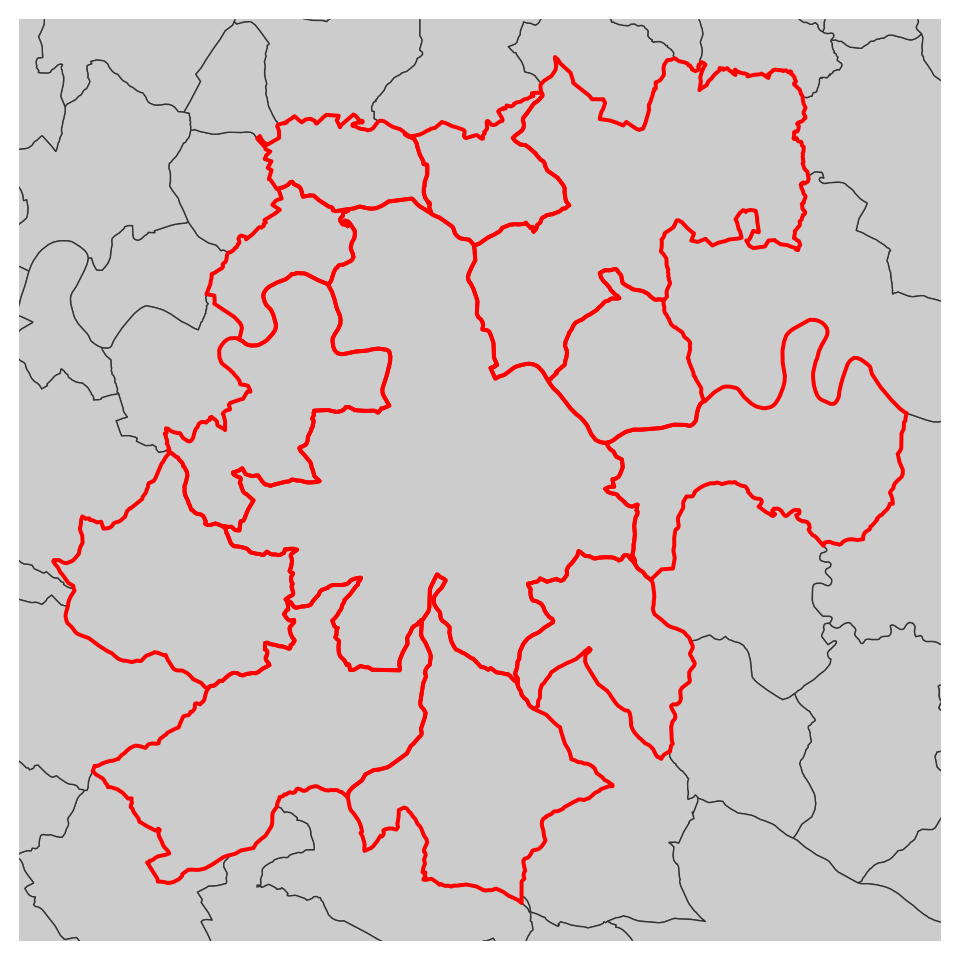
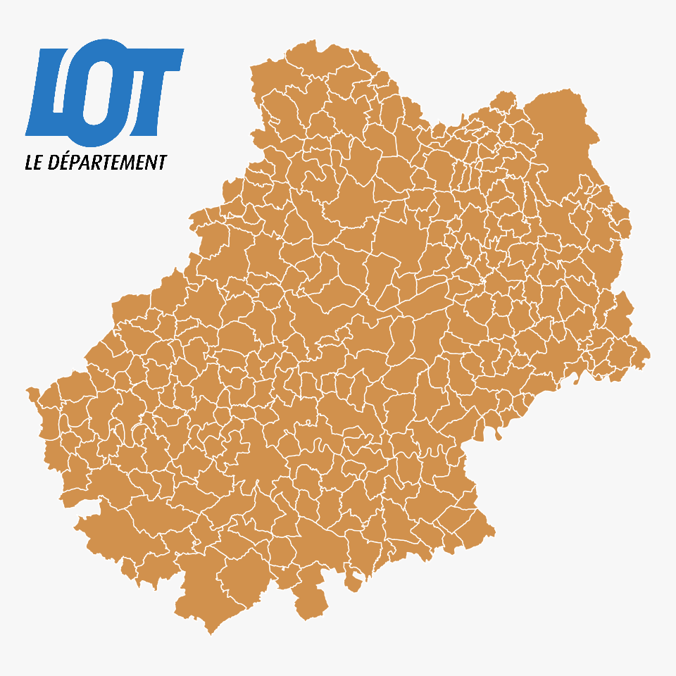

3 Map layout
3.1 Themes
mf_theme() sets a map theme. A theme is a set of graphical parameters that are applied to maps created with mapsf. These parameters are the figure margins, background and foreground colors and mf_title() options. mapsf offers some builtin themes. It’s possible to modify an existing theme or to start a theme from scratch. The map theme can also be set with mf_init() and mf_export().
3.1.1 Using a predefined theme
library(mapsf)
opar <- par(mfrow = c(2,2))
mf_theme("default")
mf_map(com)
mf_title("Theme : 'default'")
mf_theme("darkula")
mf_map(com)
mf_title("Theme : 'darkula'")
mf_theme("candy")
mf_map(com)
mf_title("Theme : 'candy'")
mf_theme("nevermind")
mf_map(com)
mf_title("Theme : 'nevermind'")
par(opar)
3.1.2 How to modify an existing theme
It is possible to modify an existing theme. In this example we use the “default” theme and modify some title parameters.
library(mapsf)
opar <- par(mfrow = c(1,2))
mf_theme("default")
mf_map(com)
mf_title("default")
mf_theme(
x = "default",
tab = FALSE,
font = 4,
bg = "grey60",
pos = "center"
)
mf_map(com)
mf_title("modified default")
par(opar)
3.1.3 How to create a new theme
It is possible to create a new theme.
mf_theme(
bg = "lightblue",
fg = "tomato1",
mar = c(0,0,1.5,0),
tab = FALSE,
inner = FALSE,
line = 1.5,
pos = "center",
cex = 1.2,
font = 2
)
mf_map(com)
mf_title("New theme")3.2 Les titres
mf_title() plots a tile on the map.
mf_theme("default")
mf_map(com)
mf_title("Map title")The title parameters can be modified.
mf_map(com)
mf_title(
txt = "Map title",
pos = "center",
tab = FALSE,
bg = "tomato3",
fg = "lightblue",
cex = 1,
line = 1.2,
font = 1,
inner = FALSE
)
3.3 North arrow
mf_arrow() plots a north arrow on the map.
mf_map(com)
mf_arrow()
3.4 Scale bar
mf_scale() plots a scale bar on the map.
mf_map(com)
mf_scale(
size = 20,
lwd = 2,
cex = 1.2,
)
3.5 Credits
mf_credits() plots credits at the bottom of the map.
mf_map(com)
mf_credits("Source: ..... \nAuthors: ............")3.6 Full map layout
mf_layout() add a complete layout to the map (title, credits, north arrow, scale bar). Each layout elements can also be set separately (with mf_title(), mf_credits(), mf_arrow() and mf_scale()).
mf_map(com)
mf_layout(
title = "Le Lot",
credits = "Author: .......\nSources: ................",
arrow = TRUE
)3.7 Annotations
# select a municipality
cahors <- com[com$NOM_COM == "Cahors", ]
mf_map(com)
mf_annotation(
x = cahors,
txt = "Cahors",
halo = TRUE,
cex = 1.5
)
3.8 Legends
mf_map(com)
mf_legend(
type = "prop",
val = c(1000,500,200,10),
inches = .4,
title = "Population",
pos = "topleft"
)
mf_legend(
type = "choro",
val = c(0,10,20,30,40),
pal = "Greens",
pos = "bottomright",
val_rnd = 0
)
3.9 Labels
mf_label() displays labels on the map.
# select a set of municipalities
com_sel <-
com[st_intersects(com, com[com$NOM_COM == "Cahors", ], sparse = F), ]
mf_map(com_sel)
mf_label(
x = com_sel,
var = "NOM_COM",
col= "black",
halo = TRUE,
overlap = FALSE,
lines = FALSE
)
mf_scale()If halo = TRUE then a halo is printed around the text.
If overlap = FALSE then labels are moved so they do not overlap.
3.10 Center the map on a specific area
mf_init() is designed to initiate a map centered on a specific extent (x bbox). The theme argument allows to select a theme.
mf_init(x = com_sel, theme = "iceberg")
mf_map(com, add = TRUE)
mf_map(com_sel, col = NA, border = "red", lwd = 2, add = TRUE)
3.11 Display several maps on the same figure
To plot several maps on the same figure, the user can use the mfrow argument of the par() function before plotting the maps. For example, use par(mfrow = c(1, 2)) (i.e. 1 row, 2 columns) to plot two maps side by side).
# define the figure layout (1 row, 2 columns)
par(mfrow = c(1, 2))
# define theme
mf_theme("default", mar = c(0,0,1.2,0), tab = FALSE, pos = "center")
# first map
mf_map(com)
mf_map(com, "TER_F", "prop",
val_max = 4000,
leg_pos = "topleft",
leg_title = "n.")
mf_title("Tertiary: Women")
# second map
mf_map(com)
mf_map(com, "TER_H", "prop",
val_max = 4000,
leg_pos = NA)
mf_title("Men")3.12 Export maps
mf_export() exports maps in PNG or SVG formats.
The exported map width/height ratio will match the one of a spatial object.
If width is specified, then height is deduced from the width/height ratio of x, figure margins and title size.
If height is specified, then width is deduced from the width/height ratio of x, figure margins and title size.
Additionally, mf_export() can be used to set a theme, to extend the map space on one or several side of the figure, or to center a map on a specific area.
mf_theme("candy", bg = "grey80")
mf_export(com, "img/c2c2.png", width = 480)
mf_map(com)
mf_title("Le Lot")
dev.off()In the following export we have added some space on the right side of the plot (50% of x width).
mf_export(
x = com,
filename = "img/c2c2_expand.png",
width = 480,
expandBB = c(0, 0, 0, .5),
theme = "candy"
)
mf_map(com, add = TRUE)
mf_title("Le Lot")
dev.off()mf_export() can produce SVG figures (with export = "svg") and use other parameters of png() or svg() functions (e.g. res, bg or family).
3.13 Add an image on the map
readPNG() from the png package can be used to add an image on a map.
mf_theme("default", mar = c(0,0,0,0))
library(png)
# image import
logo <- readPNG("img/Logo CG 46 - Bleu.png")
# image dimension
pp <- dim(logo)[2:1] * 20
# Coordinates of the topleft corner of com bounding box
xy <- st_bbox(com)[c(1,4)]
mf_map(com, col = "#D1914D", border = "white")
rasterImage(
image = logo,
xleft = xy[1],
ybottom = xy[2] - pp[2],
xright = xy[1] + pp[1],
ytop = xy[2]
)
3.14 Interactive placement of layout elements
Some layout elements can be positioned interactively on the map (legends, north arrow, scale bar…).

3.15 Add a shadow to a layer
mf_shadow() plots the shadow of a polygon layer.
mf_shadow(com)
mf_map(com, add=TRUE)
3.16 Add an inset on the map
mf_inset*() functions create map insets.
mf_inset_on() starts the inset and mf_inset_off() closes it.
If map layers have to be plotted after the inset (i.e after mf_inset_off()), please use add = TRUE.
It is not possible to plot an inset within an inset.
It is possible to plot anything (base plots) within the inset, not only map layers.
mf_init(x = com_sel, theme = "agolalight", expandBB = c(0,.1,0,.5))
mf_map(com, add = TRUE)
mf_map(com_sel, col = "tomato4", border = "tomato1", lwd = 2, add = TRUE)
# Inset France
mf_inset_on(x = dep, pos = "topright", cex = .3)
mf_map(dep, lwd = .5, border= "grey90")
mf_map(com_sel, col = "tomato4", border = "tomato1", lwd = .5, add = TRUE)
mf_scale(size = 200, pos = "bottomleft", cex = .6, lwd = .5)
mf_inset_off()
# Inset Lot
mf_inset_on(x = com, pos = "bottomright", cex = .3)
mf_map(com, lwd = .5, border= "grey90")
mf_map(com_sel, col = "tomato4", border = "tomato1", lwd = .5, add = TRUE)
mf_scale(size = 20, pos = "bottomright", cex = .6, lwd = .5)
mf_inset_off()
# Inset World Monde
mf_inset_on(x = "worldmap", pos = "topleft")
mf_worldmap(com_sel, land_col = "#cccccc",border_col = NA,
water_col = "#e3e3e3", col = "tomato4")
mf_inset_off()
mf_title("Cahors in the World")
mf_scale(1, pos = 'bottomleft')3.17 Exercice
- Import the khm and land layers from the geopackage file data/khm.gpkg.
library(sf)
khm <- st_read("data/khm.gpkg", "khm")#> Reading layer `khm' from data source
#> `/home/tim/Documents/prz/Cambodge/mapping_with_r/data/khm.gpkg'
#> using driver `GPKG'
#> Simple feature collection with 197 features and 9 fields
#> Geometry type: MULTIPOLYGON
#> Dimension: XY
#> Bounding box: xmin: 211534.7 ymin: 1149105 xmax: 784612.1 ymax: 1625495
#> Projected CRS: WGS 84 / UTM zone 48Nland <- st_read("data/khm.gpkg", "land")#> Reading layer `land' from data source
#> `/home/tim/Documents/prz/Cambodge/mapping_with_r/data/khm.gpkg'
#> using driver `GPKG'
#> Simple feature collection with 1 feature and 0 fields
#> Geometry type: MULTIPOLYGON
#> Dimension: XY
#> Bounding box: xmin: -309078.2 ymin: 623720.5 xmax: 986103.6 ymax: 2584098
#> Projected CRS: WGS 84 / UTM zone 48N- Compute the sex ratio of Cambodian regions.
khm$sex_ratio <- khm$M_TL / khm$F_TL- Create a map of the sex ratio
library(mapsf)
bks <- mf_get_breaks(khm$sex_ratio, breaks = "msd", central = T)
pals <- mf_get_pal(n = c(3,3), palette = c('Peach', 'Teal'), neutral = "grey90")
mf_map(khm, 'sex_ratio',"choro", breaks = bks, pal = pals, leg_val_rnd = 3)
- Add all relevant layout elements
- Use a personalized theme
my_theme <- mf_theme(x = "default", bg = "lightblue",
tab = FALSE, mar = c(0,0,1.2,0))- Add an inset of Pnomh Penh Region
mf_init(khm, theme = my_theme, expandBB = c(0,0,0,.5))
mf_map(land, add = T, col = "grey", border = NA)
mf_map(khm, 'sex_ratio',"choro",
breaks = bks, pal = pals,
leg_val_rnd = 3, add = TRUE)
mf_inset_on(x = khm[khm$ADM1_EN=="Phnom Penh", ], cex = .3)
mf_init(khm[khm$ADM1_EN=="Phnom Penh", ], theme = "default")
mf_map(khm, 'sex_ratio',"choro", breaks = bks, pal = pals,
add = T, leg_pos = NA)
mf_title("Phnom Penh")
mf_inset_off()
mf_title('Sex Ratio')
- Export the map in PNG format with a width of 800 pixels.
mf_export(khm, filename = "khm.png",
width = 800, expandBB = c(0,0,0,.5),
theme = my_theme)
mf_map(land, col = "#f2efe9", border = NA, add = T)
mf_map(khm, 'sex_ratio',"choro", breaks = bks, pal = pals,
leg_val_rnd = 3, add = T)
mf_inset_on(x = khm[khm$ADM1_EN=="Phnom Penh", ], cex = .3)
mf_init(khm[khm$ADM1_EN=="Phnom Penh", ], theme = my_theme)
mf_map(khm, 'sex_ratio',"choro", breaks = bks, pal = pals,
add = T, leg_pos = NA)
mf_title("Phnom Penh")
box(which = "plot")
mf_inset_off()
mf_title('Sex Ratio')
dev.off()#> png
#> 2
- Create the same map combining the population and the sex ratio
mf_export(khm, filename = "khm2.png",
width = 800, expandBB = c(0,0,0,.5),
theme = my_theme)
mf_map(land, col = "#f2efe9", border = NA, add = T)
mf_map(khm, add = T, col = "#c2dcb6", lwd =.7, border = "grey60")
mf_map(khm, c('T_TL', 'sex_ratio'),"prop_choro",
breaks = bks, pal = pals,
leg_val_rnd = c(0,3), border = "grey95",
leg_pos = c("bottomright", c(901474.8, 1307543)),
inches = .15)
mf_inset_on(x = khm[khm$ADM1_EN=="Phnom Penh", ], cex = .3)
mf_init(khm[khm$ADM1_EN=="Phnom Penh", ], theme = my_theme)
mf_map(khm, add = T, col = "#c2dcb6")
mf_map(khm, c('T_TL', 'sex_ratio'),"prop_choro", inches = .15,
breaks = bks, pal = pals, leg_pos = c(NA, NA))
mf_title("Phnom Penh")
box(which = "plot")
mf_inset_off()
mf_title('Pop & Sex Ratio')
dev.off()#> png
#> 2